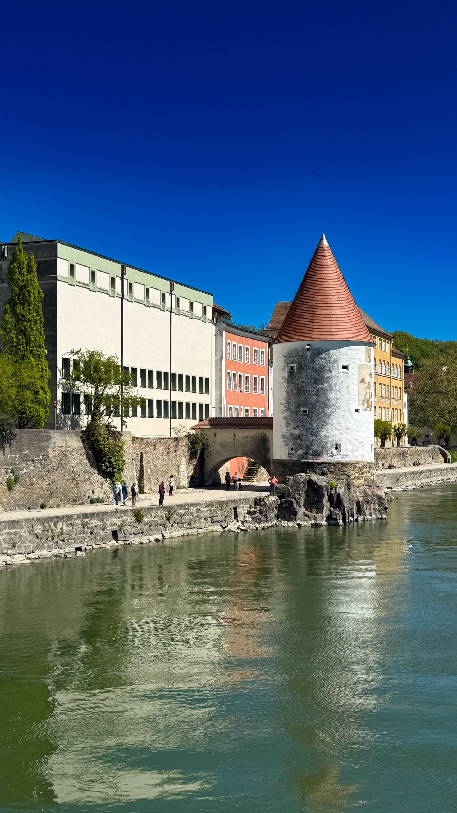
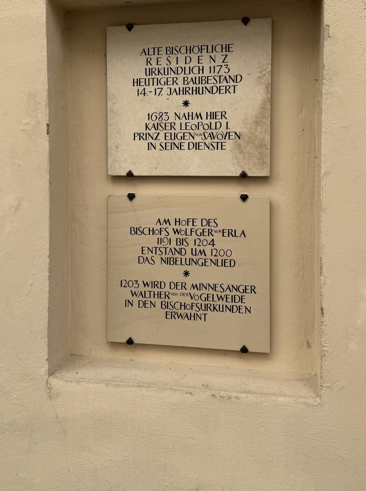
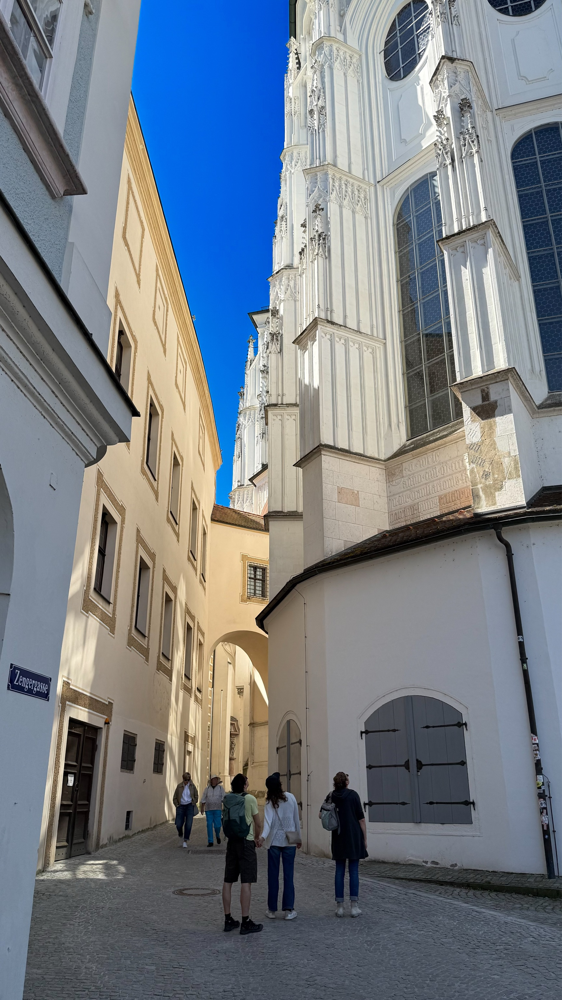
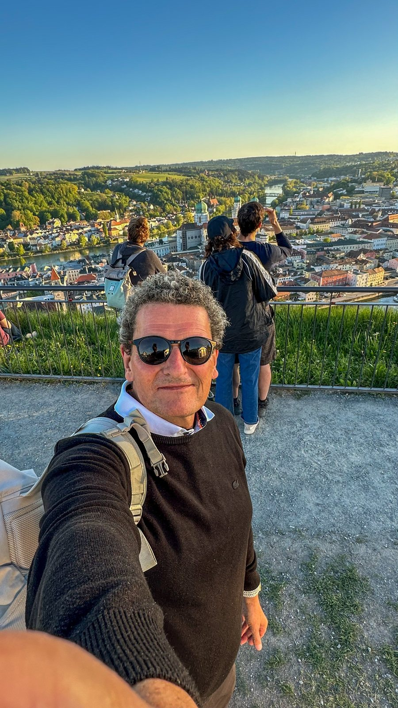
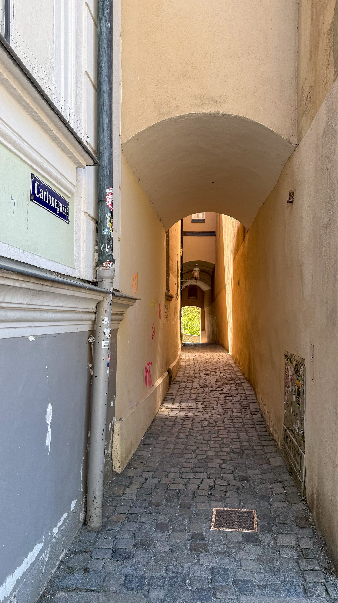
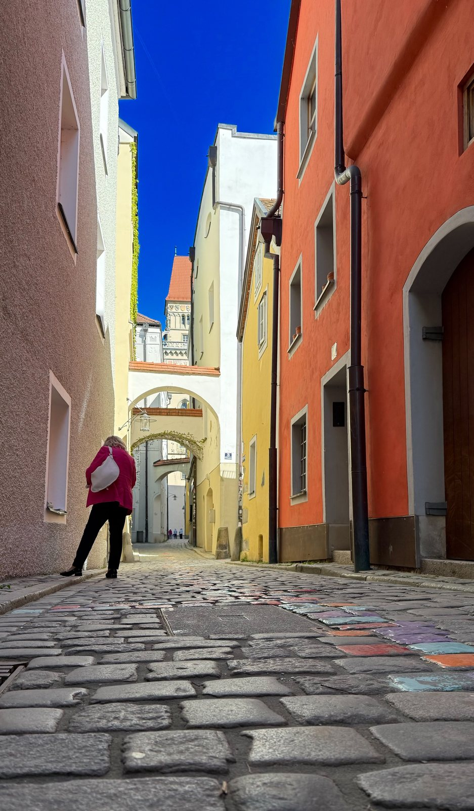
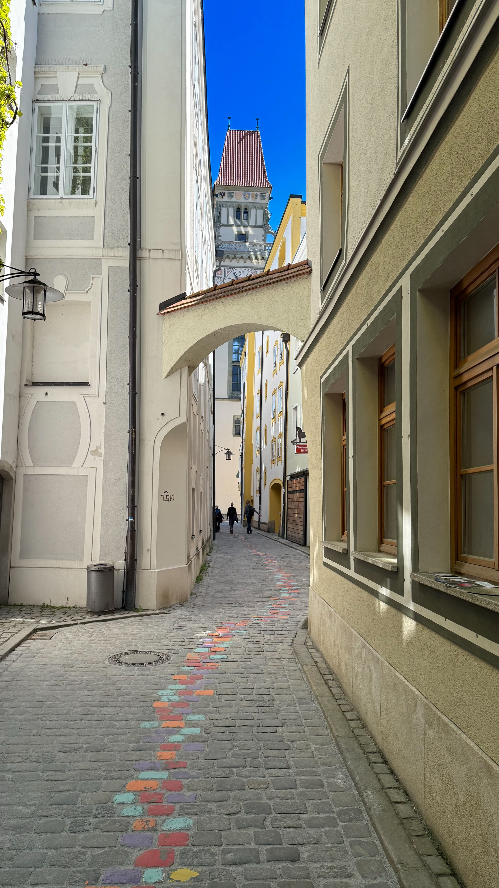
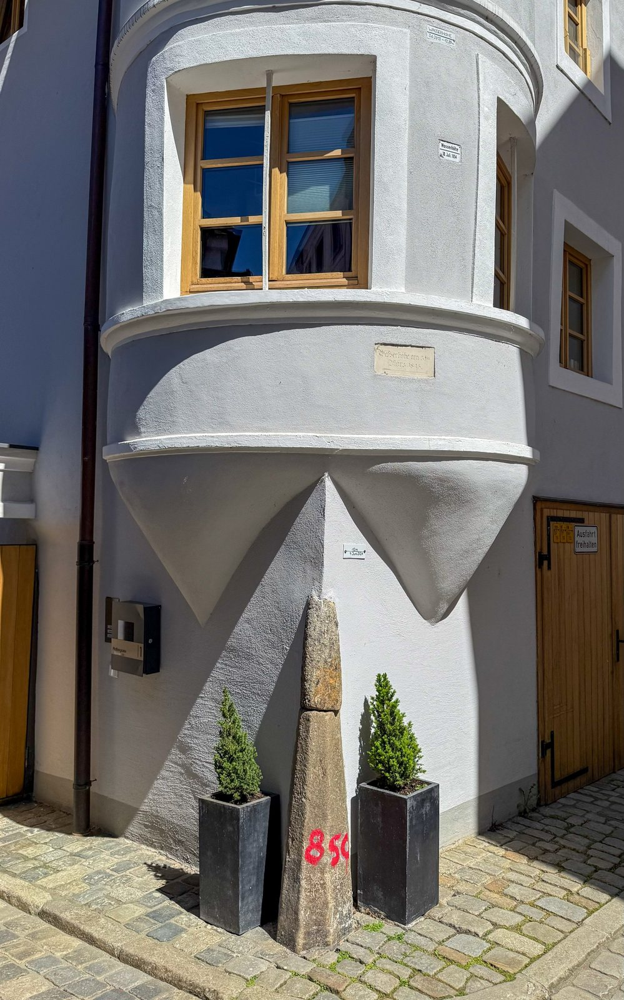
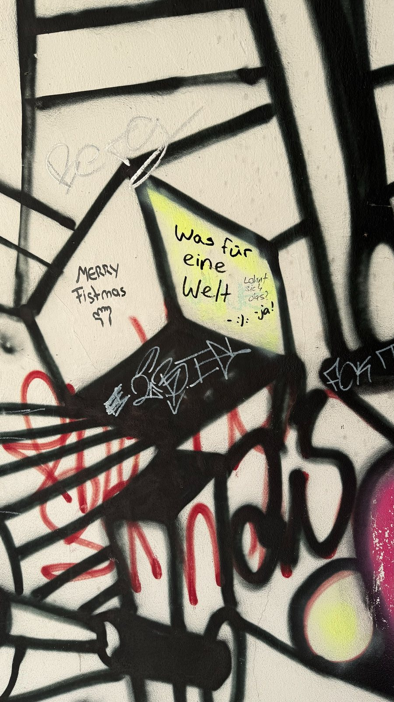
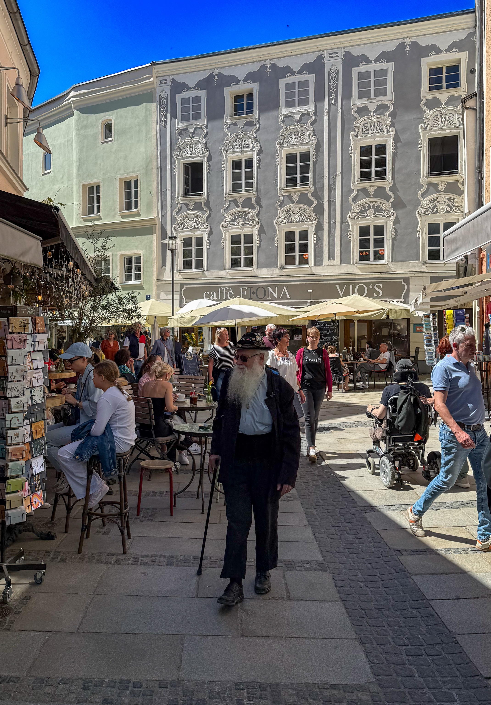

Eine Woche vorher stand ich noch am Walchensee und habe dem Wasser beim Stillhalten zugesehen. Jetzt stehe ich in Passau, und das Wasser hat es plötzlich eilig: gleich drei Flüsse auf einmal, jeder mit eigenem Tempo, jeder mit eigener Farbe, und alle wollen exakt an derselben Stelle ankommen. Vom Bayerischen Lakeland direkt an die Ortsspitze: von Seen, die stillstehen, zu einem Fluss, der sich nicht entscheiden kann, ob er Donau, Inn oder Ilz sein will. Bassd scho, sagt der Franke in mir. Genau deshalb bin ich hier.
Dreiflüssestadt: Wo Bayern in den Fels gemeißelt ist
Die Ortsspitze ist der Moment, für den Passau berühmt ist: Hier trifft die träge, grünlich-graue Donau aus dem Westen auf den ungestümen, smaragdgrünen Inn aus den Alpen und die kleine, fast schwarze Ilz, die aus dem Bayerischen Wald kommt und aussieht, als hätte sie unterwegs zu viel Waldboden mitgenommen. Drei Charaktere, ein Zusammenfluss. Man sieht die Grenze zwischen den Wassern noch ein ganzes Stück flussabwärts, wie drei Kollegen, die nebeneinander laufen, aber keiner will als Erster reden. Die Altstadt selbst liegt auf der Landzunge dazwischen wie ein Schiffsbug, spitz zulaufend, von Wasser umspült. Und ja: wenn irgendwo Bayern perfekt in die Natur gemeißelt ist, dann hier. Granit aus dem Bayerischen Wald, geschliffen von drei Flüssen, seit über tausend Jahren.
Wie alt diese Geschichte ist, steht wortwörtlich an einer Hauswand der Residenz geschrieben: Am Hofe des Bischofs Wolfger von Erla, zwischen 1191 und 1204, entstand um 1200 das Nibelungenlied. 1203 wird ein gewisser Minnesänger namens Walther von der Vogelweide in den Bischofsurkunden erwähnt. Man steht da, liest die eingemeißelten Buchstaben, und merkt: Diese Stadt hat Literaturgeschichte geschrieben, bevor es den Begriff „Content" überhaupt gab.


Dom St. Stephan: 17.974 Pfeifen und kein Register zu leise
Der Weg zum Dom führt durch die Zengergasse, eine dieser Passauer Schluchten zwischen Hausfassaden, in denen der Himmel nur noch als schmaler blauer Streifen vorkommt. Bis man um die Ecke biegt und der Dom einfach da ist, weiß, gotisch-barock verschmolzen, viel zu groß für die enge Gasse davor. Innen dann der Kontrast: Deckenfresken wie aufgeschlagene Bilderbücher, Stuck von Giovanni Battista Carlone in Mengen, die eigentlich verboten gehören sollten, und mittendrin die Bänke voller Touristen, die alle denselben Fehler machen wie ich: den Kopf in den Nacken legen und vergessen, wieder nach unten zu schauen.
Der eigentliche Star sitzt unsichtbar über einem: 17.974 Pfeifen, 233 Register, fünf einzelne Orgelwerke, verteilt über den ganzen Kirchenraum: Hauptorgel, zwei Orgeln auf den Westemporen, eine Chororgel, und irgendwo im Dachboden eine „Fernorgel", die klingt, als würde sich der Kirchenraum selbst räuspern. Größte Domorgel der Welt, seit 1928, aktuell mitten in einer Sanierung, die noch bis 2028 läuft. Was mich nicht davon abgehalten hat, mittags pünktlich dazustehen und zu warten, ob sie loslegt. Sie tat es. Ich hatte Gänsehaut, obwohl ich vorher noch über die größte Orgelpfeife (elf Meter, 306 Kilo) gescherzt hatte.


Veste Oberhaus: Wo die Fürstbischöfe ihre Stadt im Blick behielten
Von unten sieht man die Veste Oberhaus als graue Mauerkrone über der Stadt, mit rosa Fassaden davor, die aussehen, als hätte jemand die Altstadt in Puderzucker getunkt. Von oben sieht man, warum die Fürstbischöfe hier oben und nicht unten bei ihren Bürgern wohnten: freie Sicht auf alle drei Flüsse, freie Sicht auf jeden, der Ärger machen wollte. Historisch betrachtet war das ziemlich oft der Fall. Eine der größten erhaltenen Festungsanlagen Europas, gebaut auch als Absicherung gegen das eigene, aufmüpfige Passauer Volk. Herrschaft mit Höhenvorteil, könnte man sagen.
Ich bin zum Sonnenuntergang hochgefahren, zusammen mit der Familie und einer Handvoll anderer, die alle dasselbe wollten: die Stadt von oben sehen, während das Licht golden wird und die Kuppeln des Doms anfangen zu glühen. Selfie natürlich Pflicht, so wie das Fernrohr am Aussichtspunkt.

Gassen, Farben, Rathausturm
Wer durch die Passauer Altstadt läuft, lernt schnell: Es gibt keine gerade Linie. Nur Gassen, die sich winden, verjüngen, plötzlich unter einem Torbogen verschwinden und dann eine Häuserzeile in Rosa, in Gelb, in Orange freigeben, als hätte der Innenausstatter der ganzen Stadt einen einzigen Sommer lang durchgearbeitet. Die Carlonegasse ist so eng, dass zwei Menschen mit Einkaufstasche sich schon einigen müssen, wer zuerst geht. Dafür trägt sie den Namen des Mannes, der dem Dom seinen Stuck gab, was für eine Gasse dieser Größe eine ziemlich große Ehre ist.


Am Ende fast jeder Gasse taucht irgendwann derselbe Turm auf: der Rathausturm, neugotisch, mit Uhr und Wappen, wie ein Fixstern, an dem man sich in diesem Gassenlabyrinth orientiert. Jemand hat außerdem einen Streifen der Pflastersteine bunt bemalt, quer durch mehrere Gassen: eine kleine Kunstspur, der man einfach folgen kann, ohne zu wissen, wohin sie führt. Genau mein Reisestil.

Hochwasser: Die Stadt trägt ihre Narben wie Jahresringe
An einer Häuserecke in der Altstadt hängen mehrere Tafeln übereinander, jede mit einer Jahreszahl und einer Zahl in Metern: Wasserhöhe 1845, Wasserhöhe 1854, Wasserhöhe 2013. Passau lebt mit seinen drei Flüssen, und die Flüsse erinnern die Stadt regelmäßig daran, wer hier eigentlich das Sagen hat. Im Juni 2013 erreichte die Donau einen Pegel von 12,89 Metern, der höchste je gemessene Stand, nur ganz knapp unter der historischen Marke von 1501. Ganze Straßenzüge standen bis zum ersten Stock im Wasser, der Strom wurde abgestellt, die Altstadt zur Insel.
Was mich an diesen Markierungen fasziniert: Sie hängen mitten im Alltag, nicht in einem Museum, an ganz normalen Hauswänden, manche mit einem verwitterten Grenzstein davor, auf dem in Rot schlicht „850" steht: eine jener stillen Zahlen, die man erst versteht, wenn man sich vorstellt, wie das Wasser bis dorthin gereicht haben muss. Die Passauer haben daraus eine Art Gelassenheit gemacht, keine Katastrophenfolklore: Man baut wieder auf, streicht die Fassade neu, und hängt die nächste Tafel dazu. Jahresringe eines Baums, nur dass der Baum eine ganze Stadt ist.

Künstlerviertel Innstadt: Graffiti mit Haltung
Auf der anderen Innseite, in der sogenannten Innstadt, wird aus der ehrwürdigen Bischofsstadt kurz ein anderes Passau. Street-Art-Wände. Studentenkneipen. Sprüche, die zwischen Blödsinn und Tiefsinn pendeln, manchmal im selben Satz. An einer Wand fand ich, dicht neben klassischem Wildstyle-Schriftzug, eine kleine philosophische Wechselrede: „Was für eine Welt", daneben, in Antwort, offenbar von einer zweiten Hand: „Lohnt sich das? – Ja!" Passau in einem Satz, eigentlich: skeptisch, aber am Ende doch überzeugt.

Marktplatz: Wo Passau sich selbst zuschaut
Zurück auf der Altstadtseite, am Rindermarkt, sitzt Passau bei Kaffee und schaut sich selbst beim Vorbeigehen zu: Stuckfassaden in Grau und Weiß, verspielt wie Zuckerguss, darunter Caféterrassen mit Sonnenschirmen, Postkartenständer, ein Herr mit imposantem weißem Bart und Gehstock, der aussieht, als könnte er selbst eine Nibelungensage erzählen. Dazwischen Rollstuhlfahrer, Touristen, Einheimische auf dem Weg zu irgendeinem Fest. Passau ist an solchen Nachmittagen ein einziges, sehr entspanntes Defilee.
Genau hier wird klar, warum Passau nicht nur Kirche und Fluss ist: Die Stadt hat diesen leicht mediterranen Bummel-Rhythmus, den man sonst eher am Gardasee vermutet als 300 Kilometer von jedem Meer entfernt. Vielleicht liegt's am Wasser. Drei Flüsse geben nun mal andere Manieren.

Fazit: Hier passt einfach alles zusammen
Passau ist keine Stadt, die sich anstrengt, um zu beeindrucken. Sie muss nicht. Die Flüsse erledigen das von allein, seit Jahrhunderten, mal sanft, mal, wie 2013, mit erschreckender Deutlichkeit. Dazwischen liegt eine Altstadt, die Barock und Bischöfe, Graffiti und Kirchenorgel, Hochwassermarken und Kaffeekultur unter einen Hut bringt, ohne dass sich das irgendwie widersprüchlich anfühlt. Vielleicht, weil hier ohnehin schon alles zusammenfließt, was eigentlich zusammengehört: Wasser, Geschichte, Musik, Farbe. Man muss nur stehen bleiben, an der Ortsspitze, und zuschauen, wie die drei Farbtöne sich langsam vermischen.
Geh zur Ortsspitze und such die Farbgrenze der drei Flüsse, sie ist da, wenn man genau hinschaut, und geh ins Mittagskonzert im Dom, auch wenn du kein Orgelfan bist. Man wird einer, nach fünf Minuten. Angereist bin ich mit dem Plan „ein ruhiges verlängertes Wochenende", abgereist bin ich mit einer Kamera voller Kirchtürme, Hochwassertafeln und Graffiti-Weisheiten. Passau hält sich nicht an Wochenendpläne. Bassd scho.